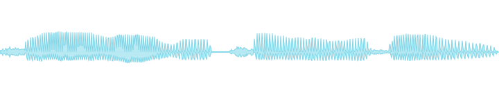

Make say sing
From a spoken sentence to a five-voice choir, in six commands.
macOS ships a speech synthesizer, say, that has
been on every Mac for decades. It speaks; it does not sing. This guide
turns it into a singing voice with vox: verify the words, compile them
onto a melody, impose each note's exact pitch without changing the
vowels, stack the result into a choir, and measure what came out. Every
command below runs as shown, and every sound on this page was made by
these exact commands.
Prerequisites: the vox tools and smpl
(INSTALL.md),
a Mac with say. No SuperCollider needed for this guide.
Step 1: hear the problem
say renders words with spoken prosody: the pitch wanders
where sentence intonation takes it, and the rhythm is speech rhythm.
Useful, free, and completely unmusical:
$ say -v Fred -o spoken.wav "slow river carry me home"

speech rhythm, sentence intonation, no notes
Step 2: gate the words
Before any audio, check that the line will survive being sung. The lyric verifier scores prosody for a sustained delivery (vowel density, open syllables) and runs the blocklist. This line keeps:
$ vox lyric review --delivery sustained --lines "slow river carry me home" --json { "verdict": "keep", "fit": 0.684, "vowel_ratio": 0.35, "open_syllable_frac": 0.4, "syllables": 7, "blocklist_flags": [] }
A line that came back
rewrite would be refused downstream: the score compiler
will not sing a line its own gate rejected.
Step 3: compile words onto a melody
The phoneme score is the one intermediate representation between words and every synthesis engine: ARPABET syllables on a beat grid, each carrying its note. The compiler splits the line into 7 syllables via CMUdict and cycles the melody across them:
$ vox tongue compile --lines "slow river carry me home" \ --melody "A2,C3,E3,D3,C3" --bpm 90 --score river.yaml
The score is plain YAML you can read and edit. Its first syllable:
meta: bpm: 90.0 syllables: - text: slow word: slow phones: [S, L, OW1] start_beat: 0.0 dur_beats: 1.0 note: A2 dyn: 1.0
Seven syllables land on
A2, C3, E3, D3, C3, A2, C3. The score outlives any renderer: the same
file drives the say path below, the syllable-bank concat path, and the
DiffSinger export (vox tongue emit-ds).
Step 4: sing it
The deterministic render path: say speaks each syllable,
then the WORLD vocoder replaces its pitch contour with the score's
exact note while keeping the formants, so the vowel identity survives
and nothing chipmunks. Spoken timing becomes beat timing:
$ vox tongue sing --score river.yaml --out sung.wav
what say gives you

measured f0 median 130.8 Hz: exactly the melody's median note, C3
The verification habit: that
130.8 Hz is not a description, it is a measurement
(vox ear on the render). The melody's notes are 110.0,
130.8, 164.8, 146.8, 130.8 Hz; the median of what was programmed is
the median of what was measured.
Step 5: stack a choir
Now the smpl pipe takes over. The harmonizer re-renders the sung line as chord-locked copies (formants preserved, per-voice jitter and vibrato decorrelated so clones read as a choir), with a drone under everything:
$ smpl read sung.wav | vox larynx harmonize --chord 0,3,7 --drone | smpl write choir.wav
one voice · HNR 24.1 dB (clean and tonal)

5 voices · chord 0,3,7 + drone · HNR 2.7 dB (the stack thickens)
Step 6: measure what you made
The loop closes the way every vox pipeline closes, with numbers. Run the measurement stages over the result and read the report:
$ smpl read choir.wav | vox ear describe | vox vector measure | smpl view
What the measurements say about this build, sung line against choir: the harmonics-to-noise ratio drops from 24.1 dB to 2.7 dB (five decorrelated voices plus a drone read as texture, not one clean tone), and the f0 median moves from 130.8 Hz to 73.5 Hz (the drone an octave under the root now anchors the pitch mass). Both shifts are the choir doing exactly what was asked.
Every sound and number on this page regenerates from
docs/make_assets.sh
(the guide section), receipted in
numbers.json.
Where to go from here
Same score, different bodies: pour percussive lines into the deep
growl with vox carrier (hear it on the
home page), export the score for a neural
singer with vox tongue emit-ds, or snap an
externally sung take onto the score's grid with
vox tongue warp. The
dependency
matrix says what each path needs.